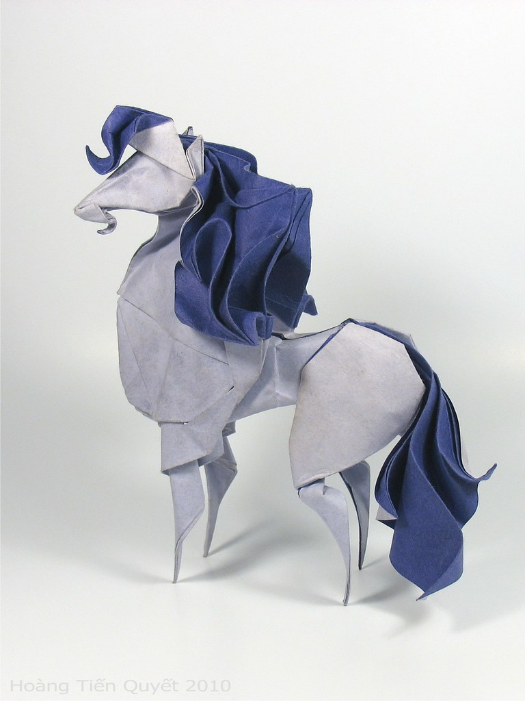
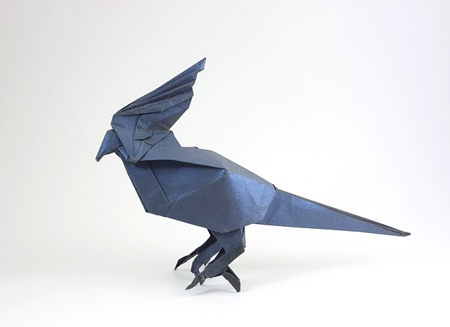

Interesting Facts about Foxes
- Foxes make 40 different sounds.
- Foxes live in underground dens.
- A group of foxes is called a skulk or leash.

Interesting Facts about Squirrels
- A squirrel’s front teeth never stop growing.
- Squirrels don’t dig up all of their buried nuts, which results in more trees!
- They can leap 10 times their body length and turn their ankles 180 degrees to face any direction.

Interesting Facts about Horses
- Horses can sleep both lying down and standing up.
- Domestic horses have a lifespan of around 25 years.
- A 19th century horse named 'Old Billy' is said to have lived 62 years.
Interesting Facts about Fishes
- There are over 30,000 different species of fish. Over 30,000 species of fish have been identified.
- Most fish don't have eyelids (except for sharks).
- Also, a great many fish live nearly motionless lives. But most fish rest.

Interesting Facts about Birds
- The chicken is the closest living relative to the Tyrannosaurus Rex.
- Ravens are great at mimicking human speech and sounds.
- The only known poisonous bird in the world is the Hooded Pitohui of Papua, New Guinea. The poison is found in its skin and feathers.